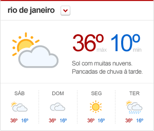

- v1.0.0 (02-06-2011)
Widget de previsão do tempo¶
grid
Este widget ocupa 4 colunas do grid, devendo assim estar incluído em uma área de 300px de largura. A altura do widget é fixa em 256px, incluindo bordas.
Descrição¶
Exibe as informações de previsão do tempo de hoje da cidade selecionada.
Instalação¶
Este destaque depende da versão >= 3.5.1 do globocore, pois utiliza o novo modelo para criação de widgets.
Antes de utilizar este widget, adicione a app ao INSTALLED_APPS:
INSTALLED_APPS = [
#...
'libby.widgets.widget_previsao_do_tempo',
#...
]
Associação¶
Em seguida, associe o widget à área de interesse. Abaixo, exemplificamos a utilização em uma área da home da globo.com:
WIDGETS = {
#...
'72912ad4-f88c-44e8-9d08-8daa6d487679': [
'libby.widgets.WidgetPrevisaoDoTempo']
#...
}
migration
Não existem migrations, pois este widget foi desenvolvido baseado no novo modelo de widgets do core.
Acesso a API de Previsão de Tempo¶
- O conteúdo servido pelo widget é obtido através de uma das urls abaixo, de acordo com a cidade selecionada:
- http://api.g1.globo.com/tempo/cidade/se/aracaju
- http://api.g1.globo.com/tempo/cidade/pa/belem
- http://api.g1.globo.com/tempo/cidade/mg/belo-horizonte
- http://api.g1.globo.com/tempo/cidade/rr/boa-vista
- http://api.g1.globo.com/tempo/cidade/df/brasilia
- http://api.g1.globo.com/tempo/cidade/ms/campo-grande
- http://api.g1.globo.com/tempo/cidade/mt/cuiaba
- http://api.g1.globo.com/tempo/cidade/pr/curitiba
- http://api.g1.globo.com/tempo/cidade/sc/florianopolis
- http://api.g1.globo.com/tempo/cidade/ce/fortaleza
- http://api.g1.globo.com/tempo/cidade/go/goiania
- http://api.g1.globo.com/tempo/cidade/pb/joao-pessoa
- http://api.g1.globo.com/tempo/cidade/ap/macapa
- http://api.g1.globo.com/tempo/cidade/al/maceio
- http://api.g1.globo.com/tempo/cidade/am/manaus
- http://api.g1.globo.com/tempo/cidade/rn/natal
- http://api.g1.globo.com/tempo/cidade/to/palmas
- http://api.g1.globo.com/tempo/cidade/rs/porto-alegre
- http://api.g1.globo.com/tempo/cidade/ro/porto-velho
- http://api.g1.globo.com/tempo/cidade/pe/recife
- http://api.g1.globo.com/tempo/cidade/ac/rio-branco
- http://api.g1.globo.com/tempo/cidade/rj/rio-de-janeiro
- http://api.g1.globo.com/tempo/cidade/ba/salvador
- http://api.g1.globo.com/tempo/cidade/ma/sao-luis
- http://api.g1.globo.com/tempo/cidade/sp/sao-paulo
- http://api.g1.globo.com/tempo/cidade/pi/teresina
- http://api.g1.globo.com/tempo/cidade/es/vitoria
Warning
Se o widget não conseguir acessar a API de previsão do tempo, ele não será exibido.